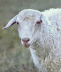
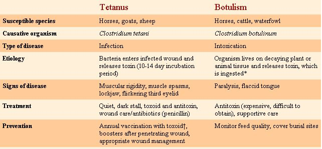

What the homesteader needs to know
Any case of suspected botulism or tetanus is lifethreatening and should receive immediate veterinary care, and possible public health intervention. This information is provided as a guideline for livestock owners so that they can call their veterinarian if they have any indication that either disease may be present.
* In young horses, the toxin may be released in a foal's intestine after it is ingested, causing a disease called Shaker Foal Syndrome.
†For horses, the toxoid is available to be given either by itself or in combination with other commonly administered vaccines, including Eastern/Western equine encephalitis, rhinopneumonitis and equine influenza. It should be given annually as an intramuscular injection, according to label instructions. Pregnant mares should be vaccinated during the last six weeks of pregnancy, and foals should be vaccinated at five to eight weeks of age. In small ruminants, the toxoid is usually combined with Clostridium C and D vaccines. The decision to vaccinate lambs and calves depends upon the prevalence of the disease in the area.
|
 |
 |
|